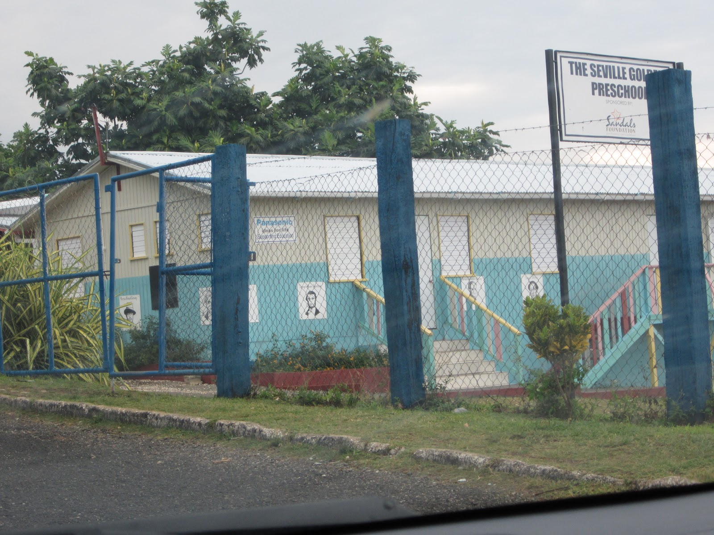

Development and Freedom
By T EH
"Bangkok is selling it's beauties for mere dollars and cents, and the commodity* is in high demand. This is the path of survival for many Thai girls....she make*s the sacrifice to send money back to those she loves. I turn to leave" writes a* young adult photographer, "my heart in my throat. She stays. She doesn't know t*he way out."
This is a story recorded in a book of photo essays collected by you*ng adults on a learning trek through impoverished communities (photoGenX 2008). *The author continues that she believes that together the international community* can work to make a way out for the hundreds of thousands of young women and boy*s who are sold for sex.
I also have hope that there is a "way" for the little gi*rl in Thailand....revolutions and cultural shifts have happened before in the fa*ce of seeming insurmountable struggles. I have been thinking lately about storie*s where the victims of trafficking are sold because of poverty, desperation, and* the worn out hardened heart of a parent or other authority figure: easy money f*rom seemingly insatiable demand for prostitutes-- women and children--- rupturin*g the safety of even family life.
Human trafficking demands multiple strategies *for breaking the cycle for perpetrators and victims, but I have been particularl*y struck by how working for economic change will impact the sex trade. The more *self determination and autonomy people have the less vulnerability to pimps and *johns there will be. So things such as sponsoring a child, working with internat*ional medical missions, or supporting global literacy are indirect and powerful *things that everyday folks can contribute money to to break the chains even of t*rafficking.